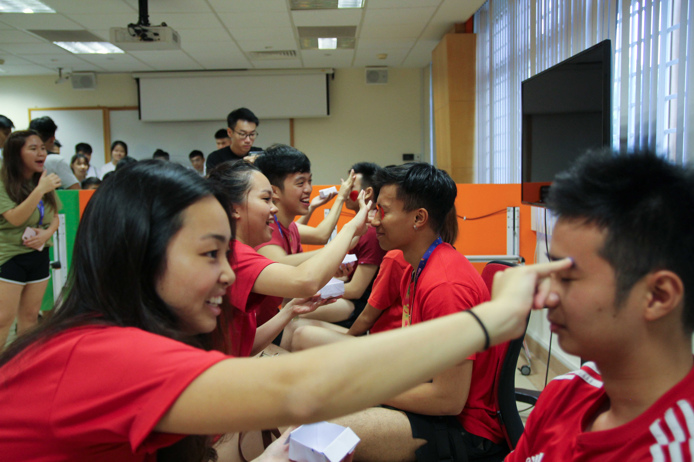
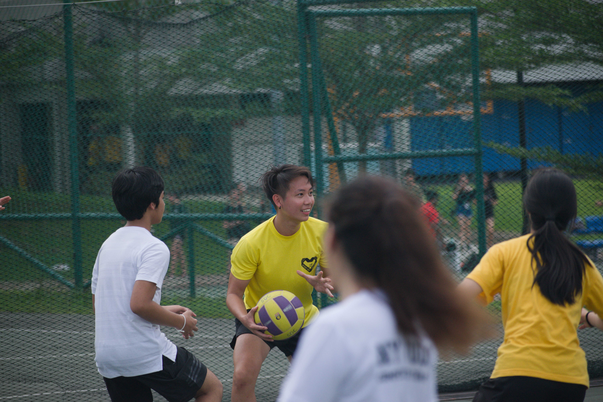
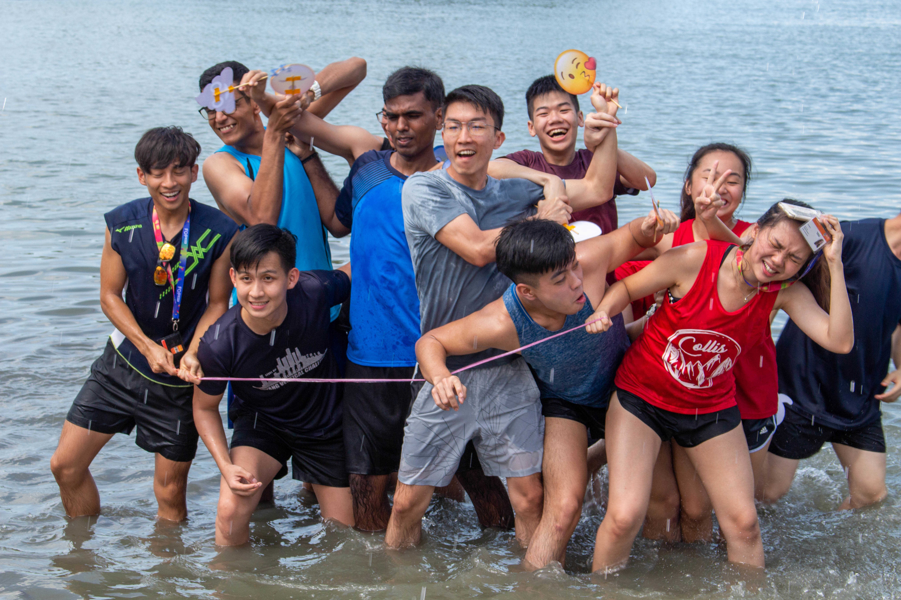
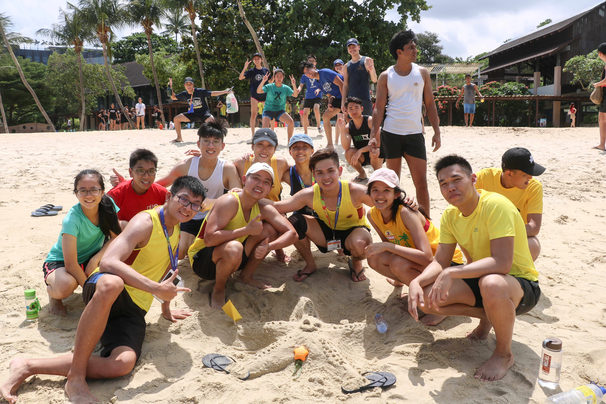

Freshmen Social Camp is all about friendships! The small
group sizes that allow you to not just bond with your
orientation group mates, but your house-mates as well! There
is no better way to get to know the friends in Computing
that will be with you for the next four years!

Our freshmen are already good friends with their house head early on Day 1 of camp! Our friendly house heads are always there to look out for your welfare and to make sure everyone feels included in every activity!

Join us at the beach for unique games that let you relax with your new friends and try things you have never tried before at the beach! When the sun is hot, why not take a dip in the sea!

Filled with house pride, our freshmen and battling intensely to win points and glory for their houses. Attractive prizes are on offer for the best house and group, but more importantly, friendships are forged in the heat of battle! En Garde!

Blue house came up with their own game during their break! If you want to try something fun with your friends, just tell your friendly OGLs! They will do their best make it happen!